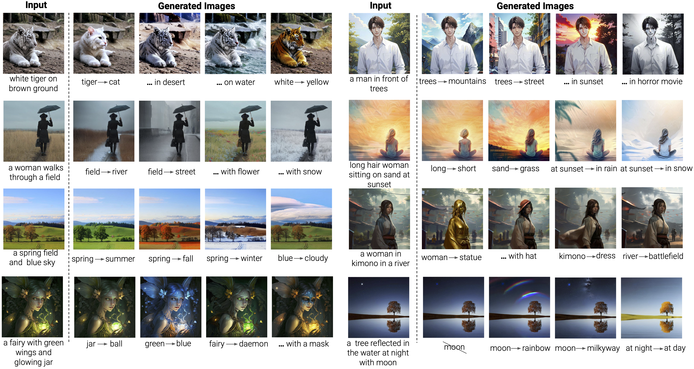
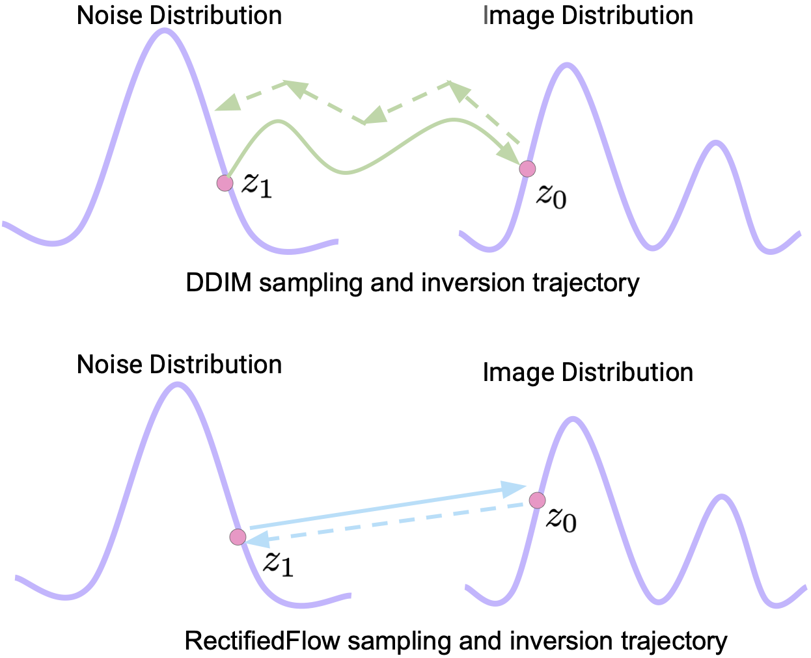
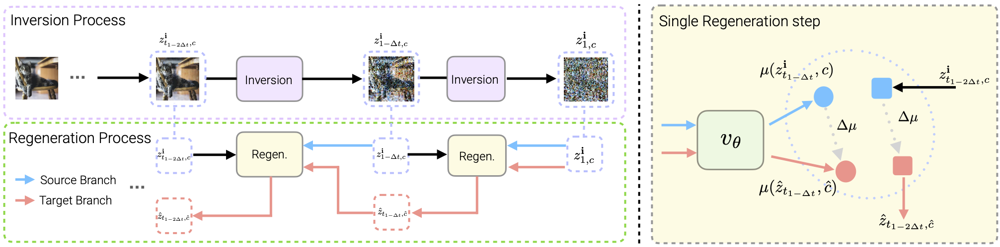
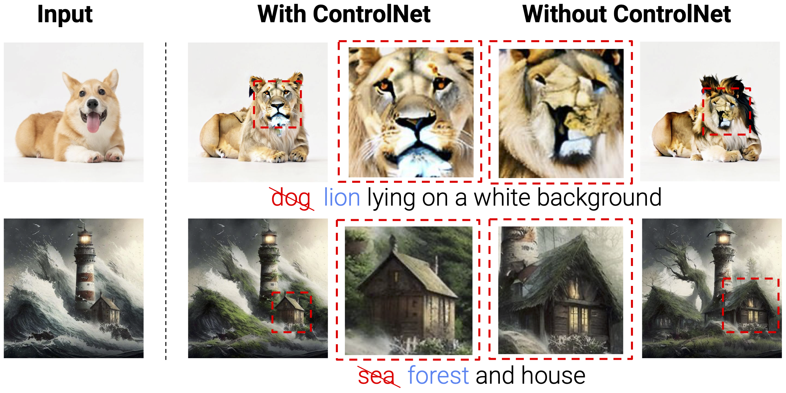
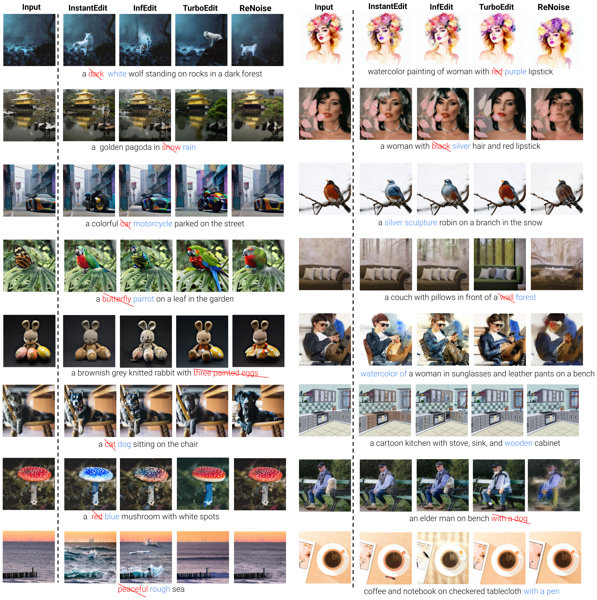

ICCV 2025
Yiming Gong, Zhen Zhu, Minjia Zhang
University of Illinois Urbana-Champaign

Diverse editing instructions and results with InstantEdit in just 4 steps (8 NFEs).
Text-guided image editing has emerged as a powerful tool for creative expression, with diffusion models leading the way in generating high-quality results. However, the computational demands of text-guided image editing is quite high, due to the lengthy sampling process.
Current endevors to reduce the sampling steps face the two challenges:
We focus on the two main challenges and develop our methods based on the two vital steps in image editing: inversion and regeneration.
One key insight of our work is that the linearized sampling trajectory of RectifiedFlow model can be used to reduce the inversion error. Thus we propose to use a simple first-order approximation of the inversion process, PerRFI, suitable for our RectifiedFlow backbone.

Intuitive visualization of the linearized sampling trajectory of RectifiedFlow model comparing to the traditional DDIM inversion.
Our regeneration pipeline has two key components:

Visualization of the inversion and regeneration process with ILI.
We also find that ControlNet can be very helpful in the inversion-regeneration pipeline for image editing. We directly use pretrained Canny-conditioned ControlNet as a plug and play component in both our inversion and regeneration process. With edge information inserted, we find improvements in performing more accurate image inversion and thus reducing structural information loss. Another advantage of this method is that users can easily control the structural rigidity by adjusting the ControlNet conditioning scale, which is supported by most of the existing ControlNet pipelines.

The effect of applying ControlNet.

@inproceedings{gong2025instantedit,
title = {InstantEdit: Text-Guided Few-Step Image Editing with Piecewise Rectified Flow},
author = {Gong, Yiming and Zhu, Zhen and Zhang, Minjia},
booktitle = {Proceedings of the IEEE/CVF International Conference on Computer Vision (ICCV)},
year = {2025}
}